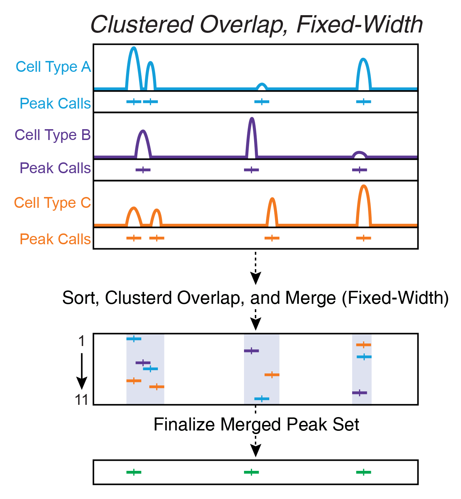
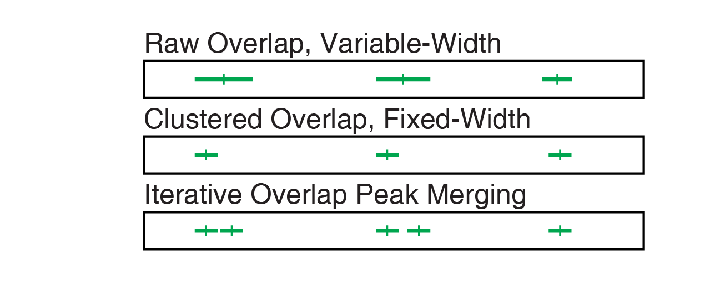

Chapter 10 Calling Peaks with ArchR
We first introduced a strategy for iterative peak merging in 2018 (Corces* & Granja* et al. Science 2018 - See Supplementary Methods). Other peak merging strategies suffer from a few key issues that we outline below.
10.0.0.1 Fixed-width vs Variable-width Peaks
We use 501-bp fixed-width peaks because they make downstream computation easier as peak length does not need to be normalized. Moreover, the vast majority of peaks in ATAC-seq are less than 501-bp wide. Using variable-width peaks also makes it difficult to merge peak calls from multiple samples. In general, we do not feel that the potential benefit derived from using variable-width peaks outweighs the costs. More broadly, most analyses are stable with respect to the peak set or peak style used.
Below, we use the same toy example of a few cell types with a few different peaks to illustrate the differences between these often used peak merging methods.
10.0.0.2 Raw Peak Overlap Using bedtools merge
Raw peak overlap involves taking any peaks that overlap each other and merging these into a single larger peak. In this scheme, daisy-chaining becomes a large problem because peaks that dont directly overlap each other get included in the same larger peak because they are bridged by a shared internal peak. Another problem with this type of approach is that, if you want to keep track of peak summits, you are forced to pick a single summit for this each new merged peak.

10.0.0.3 Clustered Overlap Using bedtools cluster
Clustered overlap takes peaks that cluster together and picks a single winner. This is often done by using bedtools cluster and then keeping the most significant peak in each cluster. In our experience, this ends up under-calling and misses smaller peaks located nearby.

10.0.0.4 Iterative Overlap In ArchR
Iterative overlap removal avoids the issues mentioned above. Peaks are first ranked by their significance. The most significant peak is retained and any peak that directly overlaps with the most significant peak is removed from further analysis. Then, of the remaining peaks, this process is repeated until no more peaks exist. This avoids daisy-chaining and still allows for use of fixed-width peaks. It is important to note that we use a normalized metric of significance for peaks because the reported MACS2 significance is proportional to the sequencing depth.

10.0.1 Comparison of Peak Calling Methods
Comparing the peak calls resulting from all of these methods directly shows clear differences in the final peak sets. It is our opinion that the iterative overlap peak merging process yields the best peak set with the fewest caveats.

10.0.2 What if I don’t like this iterative overlap peak merging process?
The iterative overlap peak merging process is implemented by ArchR via addReproduciblePeakSet() but you can always use your own peak set via ArchRProj <- addPeakSet(...).